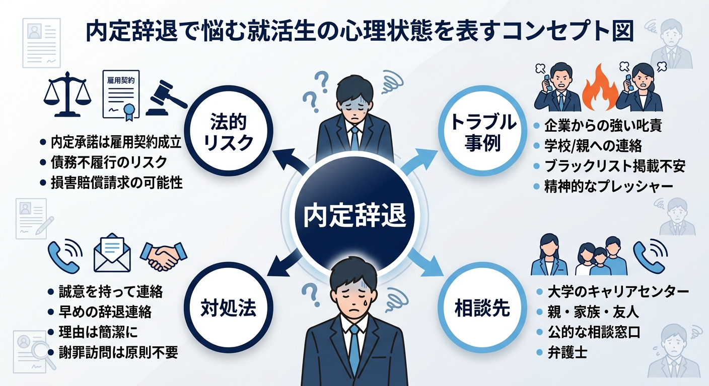
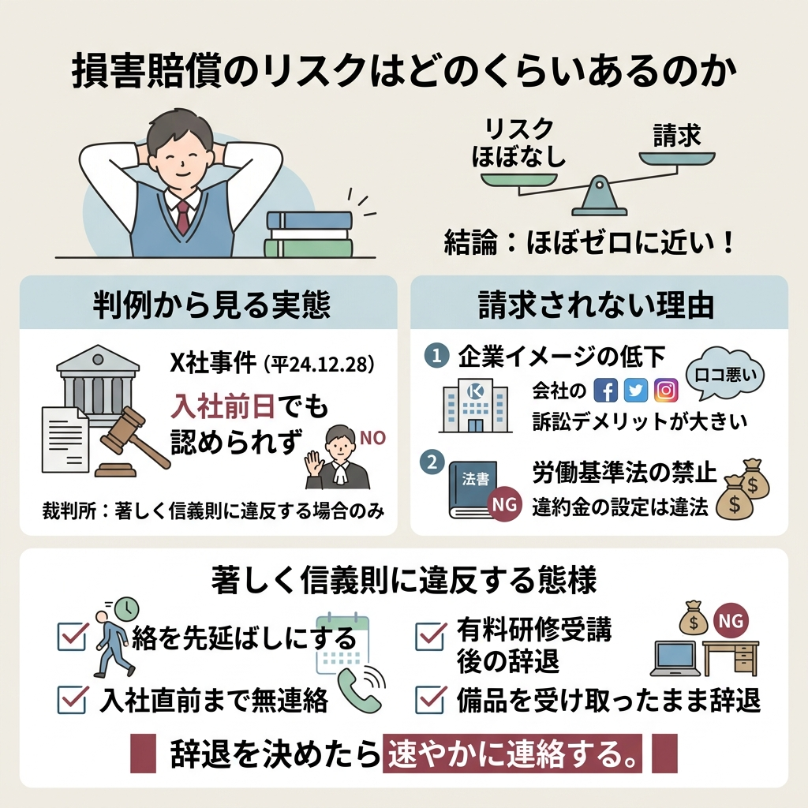
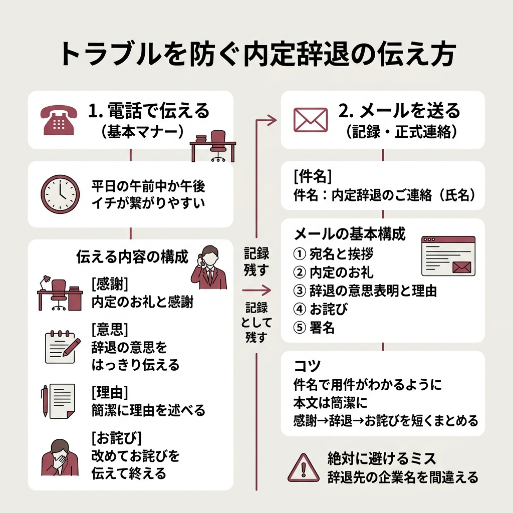
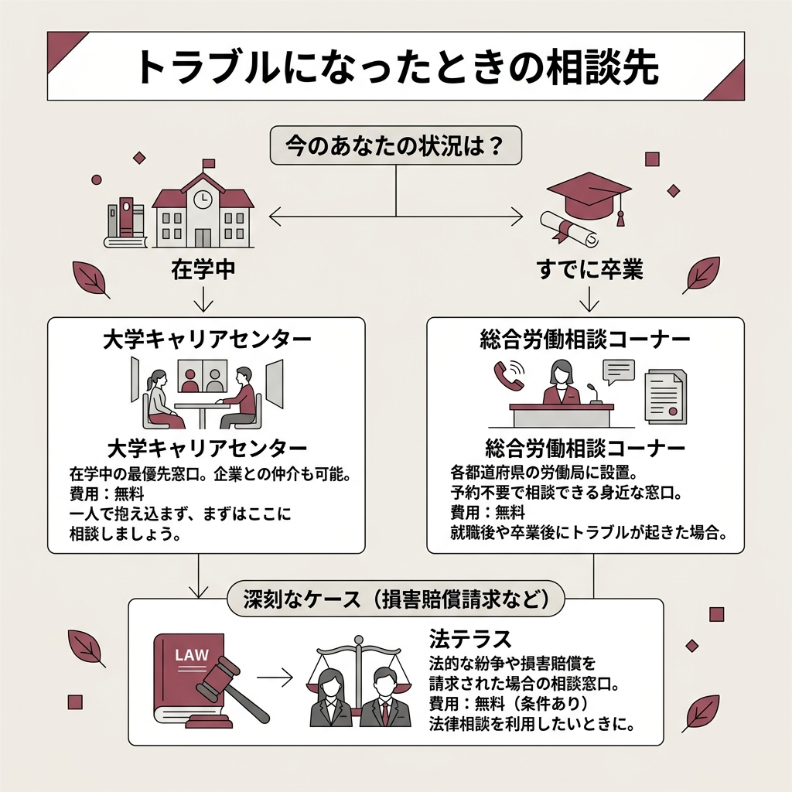
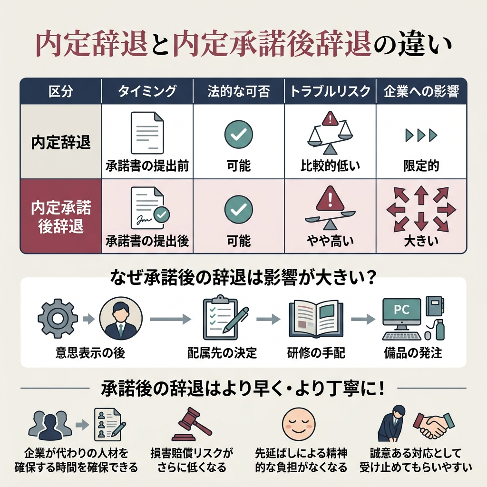

内定辞退を決めたのに、企業から怒られるんじゃないか、損害賠償を請求されるんじゃないか。
そんな不安でなかなか連絡できずにいる人、けっこう多いんじゃないでしょうか。
上位記事を10本読み比べて整理したところ、内定辞退のトラブルにはパターンがあり、対処法も明確だとわかりました。
この記事では法的な根拠からトラブル事例、具体的な伝え方まで網羅しています。
辞退を検討中の方はぜひ最後まで目を通してみてください。
内定承諾書を出した後なんだけど、本当に辞退して大丈夫なの？
法律上は問題ありません。ただ伝え方次第でトラブルになることもあるので、この記事で対処法を押さえておきましょう。

まず押さえておきたいのは、内定辞退は法律上いつでも可能だということ。
内定承諾書を出した後でも、この結論は変わりません。
内定を承諾すると、法的には「始期付解約権留保付労働契約」という契約が成立するとみなされることがあります。
大日本印刷事件（最高裁二小 昭54.7.20）では、企業の内定通知は「申し込みの承諾」とみなされ、内定承諾をしていなくとも内定通知の時点で条件付き労働契約が成立したと認定されました。
大日本印刷事件 最高裁判決（昭和54年7月20日）
覚えておきたいのが民法627条のルールです。
期間の定めのない労働契約は、解約の申し入れから2週間経過すれば終了すると定められています。
企業の承諾は不要。
辞退の意思を伝えてから2週間で、自動的に契約は終了するってことですね。
「承諾書を出してしまったから、もう辞退できないのでは？」と不安になる人は多いみたいです。
でも、内定承諾書には辞退を拒否できるような法的拘束力はありません。
個人には憲法で職業選択の自由が認められていますし、承諾書を出した後でも辞退する権利はしっかり保障されています。
さらに労働基準法では違約金の定めや損害賠償額の予定が禁止されているんですよね。
仮に承諾書に「辞退したら違約金○万円」と書いてあっても、その文言自体が法的に無効です。
法律上は自由に辞退できる。
それはわかっても、実際どんなトラブルが起きるのかは気になりますよね。
上位記事を片っ端から読んで整理した結果、いくつかの代表的なパターンが見えてきました。
一番多いのがこのパターンです。
「うちの会社をなんだと思ってるんだ」「採用にいくらかかってると思ってるんだ」と感情的に責められるケースですね。
企業側も本気で採用活動に向き合っているので、ある程度の反応は仕方ない部分もあります。
とはいえ、怒鳴る・脅すレベルまでいくとそれは企業側の問題。
対処法としては、誠意を持って謝罪しつつ辞退の意思は曖昧にしないのが鉄則です。
「申し訳ございません。ですが辞退の意思は変わりません」とはっきり伝えましょう。
感情的な対応に引きずられず、冷静さを保つことが大事だと思います。
何度も電話がかかってきたり、「もう一度考え直してほしい」と粘られるパターンも目立ちました。
採用目標に直結する話なので、引き止め自体は理解できる行動ではあるんですよね。
ただし一度決めたなら、曖昧な返答は逆効果。
「検討します」と言ってしまうと引き止めがさらにエスカレートしかねません。
「大変申し訳ないのですが、辞退の意思は変わりません」と毎回同じトーンで伝えるのがベストです。
何度も電話が来ると精神的にきついんだけど、無視してもいいのかな？
まずは電話に出て明確に辞退の意思を伝えましょう。それでも止まらない場合は、大学のキャリアセンターや労働相談窓口に相談するのが先ですよ。
「なぜ辞退するのか」「他社はどこに決めたのか」と詰問されるケースも報告されています。
辞退理由を伝えること自体はマナーです。
ただ、すべてを正直に話す義務はありません。
「総合的に検討した結果」「家族と相談した結果」程度で十分ですし、他社名を聞かれても答えなくて大丈夫ですよ。
来社して直接話をしたいと求められるケースもあるみたいです。
呼び出しに応じる法的義務はありません。
電話やメールで辞退の意思を伝えれば、手続き上は十分とのこと。
「お電話にて失礼いたします」と丁寧にお断りすれば問題ないでしょう。

「損害賠償を請求する」と言われたら、さすがに怖いですよね。
これが内定辞退で最も恐れられるトラブルかもしれません。
実際のリスクがどの程度なのか、判例をもとに整理してみました。
結論から言うと、内定辞退で損害賠償が認められた例はほぼありません。
X社事件（東京地裁 平24.12.28）では、入社前日という極めて遅いタイミングでの内定辞退に対して企業が損害賠償を請求しました。しかし、裁判所は「内定辞退が著しく信義則上の義務に違反する態様で行われた場合に限り、損害賠償責任を負う」として、請求を認めませんでした。
X社事件 東京地裁判決（平成24年12月28日）
入社前日でも認められなかったわけです。
通常のタイミングでの辞退なら、損害賠償を心配する必要はほぼないと考えていいでしょう。
これだけ多くの学生が辞退しているのに、損害賠償に発展するケースがほぼないのは、企業側にとっても訴訟のメリットがほとんどないからです。
SNSや口コミサイトですぐ情報が拡散される時代、企業イメージへのダメージの方がはるかに大きいんですよね。
損害賠償が認められる可能性があるのは、「著しく信義則に違反する態様」で辞退した場合のみです。
辞退を決めたら速やかに連絡する。
正直、これさえ守っていれば損害賠償のリスクはほぼゼロに近いと思ってます。
また、労働基準法では違約金の定めや損害賠償額の予定を企業が設定することも禁止されています。
「辞退したら違約金を払え」という要求自体が法的に認められないので、もし言われても慌てないでくださいね。

トラブルの大半は「伝え方」で回避できます。
ここからは具体的な連絡方法を見ていきましょう。
辞退の第一報は電話で入れるのが基本マナーとされています。
平日の午前中か午後イチが繋がりやすい時間帯です。
「内定をいただきありがとうございました」から入りましょう。
「大変申し訳ないのですが、御社の内定を辞退させていただきたくお電話しました」と明確に。
「他社との比較検討の結果」「自身のキャリアを改めて考えた結果」など、端的に伝えます。
「貴重なお時間をいただいたのに申し訳ございません」で締めましょう。
電話が苦手な人にとってはハードルが高いかもしれません。
ただ、メールだけだと「確認が遅れた」「届いていなかった」というトラブルの元にもなります。
第一報は電話、その後の記録としてメールを送る。
この流れが一番確実ですよ。
電話が苦手すぎて、どうしてもメールだけで済ませたいんだけど…
気持ちはわかります。でも電話なら担当者のリアクションをその場で確認できるので、「ちゃんと伝わった」という安心感が得られますよ。どうしても無理ならメールでもOKですが、確認の返信が来るまでは気を抜かないでくださいね。
電話が繋がらない場合や、電話後の正式連絡としてメールを送る場面もありますよね。
構成はシンプルにまとめるのがコツです。
件名：内定辞退のご連絡（氏名）
①宛名と挨拶 → ②内定のお礼 → ③辞退の意思表明と理由 → ④お詫び → ⑤署名
件名を見ただけで用件がわかるようにすること。本文は簡潔に、長くなりすぎないよう心がけましょう。
ダラダラと長い言い訳を書くよりも、感謝→辞退→お詫びの3要素を短くまとめた方が誠意は伝わります。
辞退先の企業名を間違えるミスだけは絶対に避けてくださいね。

丁寧に伝えたのに、それでもトラブルに発展するケースはゼロとは言い切れません。
困ったときに頼れる相談先を知っておくだけで、気持ちはかなり楽になるはずです。
| 相談先 | 特徴 | 費用 |
|---|---|---|
| 大学キャリアセンター | 企業との仲介も可能。在学中なら最初に頼るべき場所 | 無料 |
| 総合労働相談コーナー | 各都道府県の労働局に設置。予約不要で相談できる | 無料 |
| 法テラス | 損害賠償を実際に請求された場合の法律相談窓口 | 無料（条件あり） |
在学中であれば、まずは大学のキャリアセンターに相談するのが一番スムーズです。
企業とのやり取りを仲介してくれるケースもあるので、一人で抱え込まないでくださいね。
すでに卒業している場合は、総合労働相談コーナーが身近な窓口になります。
全国の労働局や労働基準監督署に設置されていて、予約なしで利用できるのがありがたいですよ。

この2つ、似ているようで少し意味が違います。
| 区分 | 内定辞退 | 内定承諾後辞退 |
|---|---|---|
| タイミング | 承諾書の提出前 | 承諾書の提出後 |
| 法的な可否 | 可能 | 可能 |
| トラブルリスク | 比較的低い | やや高い |
| 企業への影響 | 限定的 | 大きい |
法的にはどちらも辞退できます。
ただ、承諾後の辞退は「この企業で働きます」と意思表示した後なので、企業側の準備が進んでいることが多いんですよね。
配属先の決定、研修の手配、備品の発注。
これらが動き出した後の辞退は、企業への影響がどうしても大きくなります。
だからこそ、承諾後に辞退する場合はより早く・より丁寧に伝える必要があるわけです。
大学推薦で内定をもらった場合、一般応募にはないリスクがあります。
推薦で内定承諾後に辞退すると、翌年以降の推薦枠が削減・廃止される可能性があるんです。
先輩たちが企業で成果を出し、信頼を積み上げてきた結果としての推薦枠。
自分1人の辞退が後輩の就活に直接影響するかもしれないと思うと、軽い気持ちでは判断できませんよね。
推薦で内定もらったけど、どうしても辞退したい場合はどうすればいい？
まず大学のキャリアセンターや指導教員に相談してください。個人で企業に連絡する前に、大学を通して対応するほうがトラブルを最小限に抑えられますよ。
推薦枠の辞退は自分だけの問題ではないので、必ず大学側と連携して進めることをおすすめします。
内定辞退のトラブルは、正しい知識と適切なタイミングでの連絡で大半は回避できます。
この記事が辞退の連絡に踏み出すきっかけになればうれしいです。